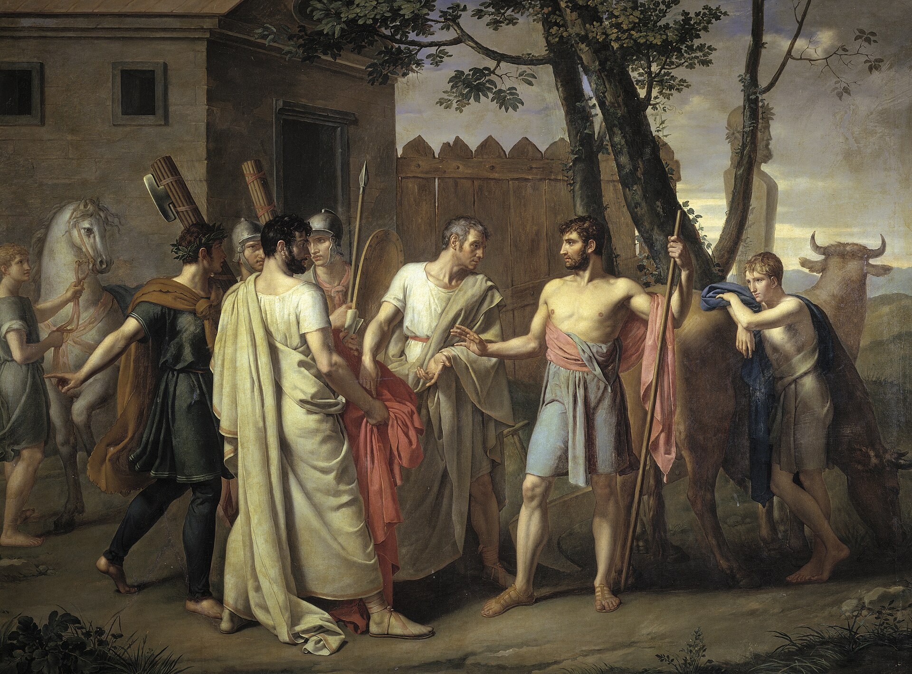

张开，浙江缙云人，北京大学政府管理学院博士候选人，研究领域为政治理论和政治思想史。我的相关研究发表在《政治学研究》《北大政治学评论》《云南大学学报（社会科学版）》上。我博士论文的主题是托克维尔。我的学术旨趣分两点：其一，从西方近代以来的政治哲学史和思想史的视角，分析自由概念的演变，尤其是结合韦伯、施密特对现代国家、议会民主和官僚制的批判；其二，从批判理论的视角（并非当代激进左翼而更倾向于第一代法兰克福学派的批判理论脉络），分析现代社会的病理学，尤其是工具理性和精神性问题。宽泛来说，我对西方政治思想史都有一定兴趣。
平时我也喜欢徒步和户外运动，同时会在豆瓣上写作影评。
Kai Zhang is a Ph.D. candidate at the School of Government, Peking University and was a visiting Ph.D. fellow at the Ash Center, Harvard Kennedy School. His research interests lie in political theory and the history of political thought. His doctoral dissertation examines Alexis de Tocqueville, liberalism, and the relationship between politics and religion. More broadly, his research interests are two-fold: first, tracing ideas of liberty within the intellectual history of Western political philosophy, particularly from the perspective of Weber’s rationalization and Schmitt’s political theology; second, analyzing the pathologies of modern society from the perspective of critical theory, mostly grounded in the tradition of the Frankfurt School.
I also enjoy hiking and outdoor sports, and write film reviews on Douban.
教育经历Education
-
博士研究生，北京大学政府管理学院
Ph.D. Student, School of Government, Peking University
-
访问博士研究员，哈佛大学肯尼迪学院阿什中心
Visiting Ph.D. Fellow, Ash Center, Harvard Kennedy School
-
法学学士，北京大学政府管理学院
B.A. in Politics and Public Administration, Peking University
语言能力Languages
- 汉语母语
- 英语流利
- 法语熟练
- ChineseNative
- EnglishFluent
- FrenchProficient

ROMAN REPUBLIC · 1806